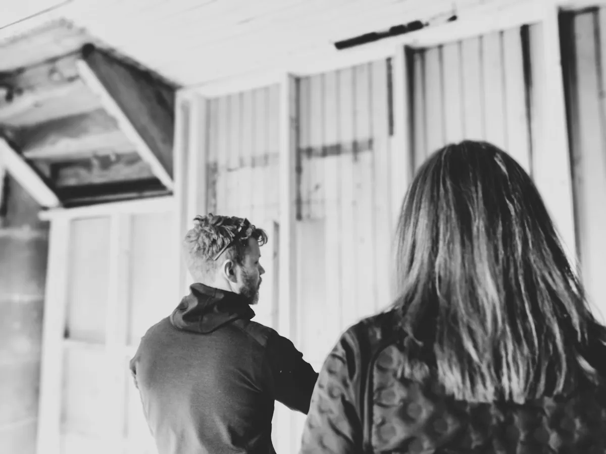

Kontakt
Vad vill du
göra plats för?
Ett projekt börjar med dina funderingar. Ring eller mejla, oavsett om du har en färdig ritning eller en första tanke.
Johannes Lindgren
- Telefon
- 073 732 91 52
- E-post
- johannes@lindgrenmobelsnickeri.se
- Verkstaden
- Köpmangatan 16
386 50 Mörbylånga, Öland
Ring gärna innan du kommer förbi, så att jag har möjlighet att ta emot dig.
Hitta till verkstadenBerätta om din idé.
